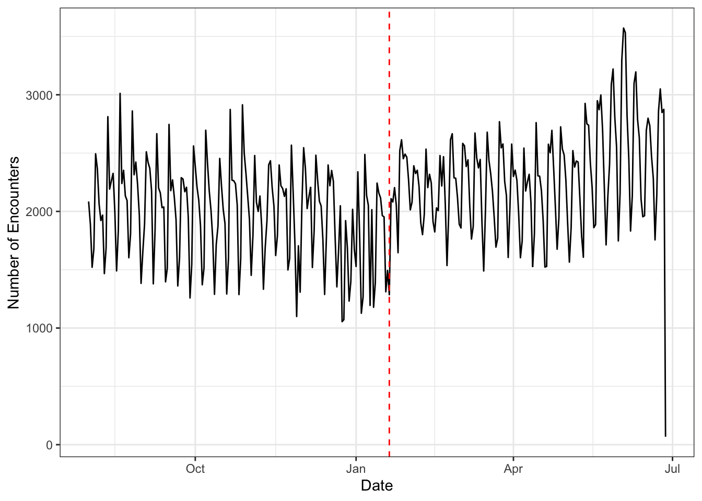

# count the encounters per dateenc_counts <- ice |>mutate(event_date =as.Date(event_date)) |>filter(event_date <=Sys.Date()) |>count(event_date)enc_counts |>ggplot(aes(x=event_date, y = n)) +geom_line() +labs(x="Date", y ="Number of Encounters") +#scale_x_date(limits = as.Date(c("2024-08-01", "2025-06-27"))) +geom_vline(xintercept =as.Date("2025-01-20"), linetype="dashed", color ="red")+theme_bw()

Same plot but aggregated by months
enc_month_counts <- ice |>filter(year(event_date) <=year(Sys.Date())) |>mutate(month =floor_date(event_date, "month")) |>count(month)enc_month_counts |>ggplot(aes(x=month, y =n)) +geom_col(fill="slateblue") +labs(x="Month", y ="Total Number of Encounters") +theme_bw()
# A tibble: 30 × 3
# Groups: case_category [30]
case_category count prop
<chr> <int> <dbl>
1 <NA> 439018 0.627
2 [8C] Excludable / Inadmissible - Administrative Final Order I… 63785 0.0911
3 [16] Reinstated Final Order 51714 0.0739
4 [8B] Excludable / Inadmissible - Under Adjudication by IJ 50245 0.0718
5 [8A] Excludable / Inadmissible - Hearing Not Commenced 34720 0.0496
6 [2A] Deportable - Under Adjudication by IJ 14430 0.0206
7 [3] Deportable - Administratively Final Order 9438 0.0135
8 [8G] Expedited Removal - Credible Fear Referral 8010 0.0114
9 [8F] Expedited Removal 7983 0.0114
10 [9] VR Under Safeguards 3812 0.00544
# ℹ 20 more rows
Departed Date About 14% of ppl in the dataset have been deported (that we know of)
sum(!is.na(ice$departed_date))/nrow(ice)
[1] 0.1438093
If deported, average time between encounter and deportation is 50 days.
time_btwn <-difftime(ice$departed_date, ice$event_date, units ="days")mean(time_btwn, na.rm =TRUE)
Time difference of 50.48355 days
Final Order (yes/no) Whether an individual has a final order of removal, which means an order of removal that was either affirmed on appeal or not appealed, or that was issued without the involvement of an immigration judge (for example, in expedited removal) (from codebook)
# A tibble: 13 × 3
# Groups: final_program [13]
final_program count prop
<chr> <int> <dbl>
1 ERO Criminal Alien Program 577142 0.824
2 Fugitive Operations 48996 0.0700
3 Non-Detained Docket Control 32735 0.0467
4 Alternatives to Detention 13752 0.0196
5 Detained Docket Control 13419 0.0192
6 287G Program 10395 0.0148
7 Mobile Criminal Alien Team 2512 0.00359
8 Juvenile 562 0.000803
9 Detention and Deportation 519 0.000741
10 ERO Criminal Prosecutions 121 0.000173
11 Law Enforcement Area Response Units 70 0.000100
12 287g Task Force 12 0.0000171
13 Violent Criminal Alien Section 12 0.0000171
Responsible AORs
unique(ice$responsible_aor)
[1] "HQ Area of Responsibility"
[2] "Seattle Area of Responsibility"
[3] "New York City Area of Responsibility"
[4] "Washington Area of Responsibility"
[5] "Houston Area of Responsibility"
[6] "Newark Area of Responsibility"
[7] "St. Paul Area of Responsibility"
[8] "Miami Area of Responsibility"
[9] "San Francisco Area of Responsibility"
[10] "New Orleans Area of Responsibility"
[11] "Dallas Area of Responsibility"
[12] "Denver Area of Responsibility"
[13] "Buffalo Area of Responsibility"
[14] "Atlanta Area of Responsibility"
[15] "Chicago Area of Responsibility"
[16] "San Diego Area of Responsibility"
[17] NA
[18] "Boston Area of Responsibility"
[19] "El Paso Area of Responsibility"
[20] "Harlingen Area of Responsibility"
[21] "Phoenix Area of Responsibility"
[22] "Salt Lake City Area of Responsibility"
[23] "Philadelphia Area of Responsibility"
[24] "Detroit Area of Responsibility"
[25] "San Antonio Area of Responsibility"
[26] "Baltimore Area of Responsibility"
[27] "Los Angeles Area of Responsibility"
# A tibble: 27 × 2
# Groups: ice$responsible_aor [27]
`ice$responsible_aor` n
<chr> <int>
1 HQ Area of Responsibility 205871
2 Miami Area of Responsibility 65326
3 New York City Area of Responsibility 42020
4 Chicago Area of Responsibility 41327
5 Atlanta Area of Responsibility 34825
6 Dallas Area of Responsibility 34462
7 New Orleans Area of Responsibility 28833
8 Houston Area of Responsibility 24795
9 San Antonio Area of Responsibility 24768
10 St. Paul Area of Responsibility 18023
# ℹ 17 more rows
# A tibble: 357 × 2
# Groups: ice$responsible_site [357]
`ice$responsible_site` n
<chr> <int>
1 ERO - Pacific Enforcement Response Center 200855
2 VARRICK, NY, SERVICE PROCESSING CENTER (DOCKET CONTROL OFFICE) 30915
3 DALLAS, TX, DOCKET CONTROL OFFICE 26026
4 ERO - Montgomery County, TX Sub Office 19238
5 ERO - San Antonio, TX Field Office 18902
6 ATLANTA, GA, DOCKET CONTROL OFFICE 15323
7 KROME, MIAMI, FL, DOCKET CONTROL OFFICE 14568
8 SAN FRANCISCO, CA, DOCKET CONTROL OFFICE 12051
9 NEWARK, NJ, DOCKET CONTROL OFFICE 11871
10 ORLANDO, FL, DOCKET CONTROL OFFICE 10458
# ℹ 347 more rows